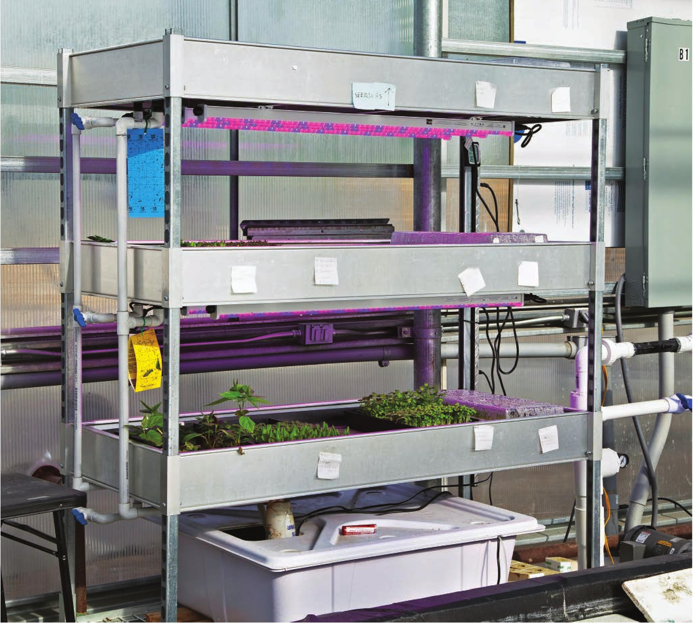

VARIATIONS The build guide shows several flood and drain variations. Here are just a few ways to modify this garden design: • Change pot size. Larger pots are great for large flowering crops. Many small pots might be more manageable for leafy greens and herbs. • Change pot material. Plastic pots are great but they can sometimes lose substrate through drainage holes. This loose substrate can then clog irrigation lines. Fabric pots are perfect for flood and drain gardens because they make it nearly impossible to lose substrate. The fabric allows the nutrient solution to quickly reach the plant, and then it drains quickly, giving the roots access to air and preventing overwatering. • Change substrate. Expanded clay pellets are great because they are difficult to overwater and are reusable. Coco is another great option; it holds more water, Flood and drain is a popular design for vertical gardens because the grow beds can be stacked on a rack with one reservoir at the bottom for all the levels. 100 DIY HYDROPONIC GARDENS
